Section 5.1 Projective Resolutions
Subsection Definition, Existence, Examples
“”―
To describe an \(R\)-module \(M\text{,}\) we need to know a set of generators and the relations among those generators. If we continue that process, and ask for relations among the relations (treating the relations as generators for the module of relations), and relations among the relations among the relations, and so on, we construct what is known as a free resolution for \(M\text{.}\) Free resolutions play a key role in many important constructions, and encode a lot of interesting information about our module. For example, if the module came from some geometric setting, geometric information about the module gets reflected in the free resolution. Studying the resolutions of all finitely generated modules over a ring \(R\) also tells us important information about the ring itself, and its singularities.
In this chapter we will introduce free resolutions, and more generally projective resolutions, as well as their injective counterpart. We will also study free resolutions in a bit more detail over commutative local noetherian rings, and the graded analogue. For more details on the basics of graded free resolutions, we recommend Irena Peeva’s excellent book [Pee11].
Definition 5.1. Projective Resolution.
Let \(M\) be an \(R\)-module. A projective resolution is a complex
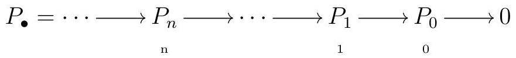
where all the \(P_{i}\) are projective, \(\mathrm{H}_{0}(C)=M\text{,}\) and \(\mathrm{H}_{i}(C)=0\) for all \(i \neq 0\text{.}\) We may also write a projective resolution for \(M\) as an exact sequence
\begin{equation*}
\cdots \underset{\substack{\mathrm{n} \\ \cdots}}{\longrightarrow} \longrightarrow \underset{\substack{1 \\ 1}}{\longrightarrow} P_{0} \longrightarrow M \longrightarrow 0
\end{equation*}
where all the modules \(P_{i}\) are projective. The resolution is free if all the \(P_{i}\) are free.
You will find both these definitions in the literature, often indicating the second option as an abuse of notation. We will be a bit sloppy and consider both equivalently, since at the end of the day they contain the same information. One often uses the word acyclic to refer to a complex that is exact everywhere except at homological degree \(0\text{;}\) but we caution the reader that some authors use the word acyclic to refer to exact complexes. For that reason, we will avoid the word acyclic altogether.
Theorem 5.2. Every Module has a Free Resolution.
Every \(R\)-module has a free resolution, and thus it has a projective resolution.
Proof.
Let \(M\) be an \(R\)-module. We are going to construct a projective resolution quite explicitly. The first step is to find a projective module \(P_{0}\) that surjects onto \(M\text{.}\) In fact, we can find a free module surjecting onto \(M\text{,}\) by Lemma 4.13. Now consider the kernel of that projection, say
\begin{equation*}
0 \longrightarrow K_{0} \stackrel{i_{0}}{\longrightarrow} P_{0} \stackrel{\pi_{0}}{\longrightarrow} M \longrightarrow 0
\end{equation*}
Set \(\partial_{0}:=\pi_{0}\text{.}\) There exists a free module \(P_{1}\) surjecting onto \(K_{0}\text{,}\) again by Lemma 4.13. Now the map \(\partial_{1}=i_{0} \pi_{1}\) satisfies \(\operatorname{im} \partial_{1}=K_{0}=\operatorname{ker} \partial_{0}\text{.}\)
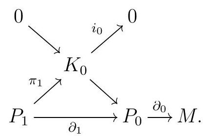
Now the process continues analougously. We find a free module \(P_{2}\) surjecting onto \(K_{1}:=\) ker \(\partial_{1}\text{,}\) and set
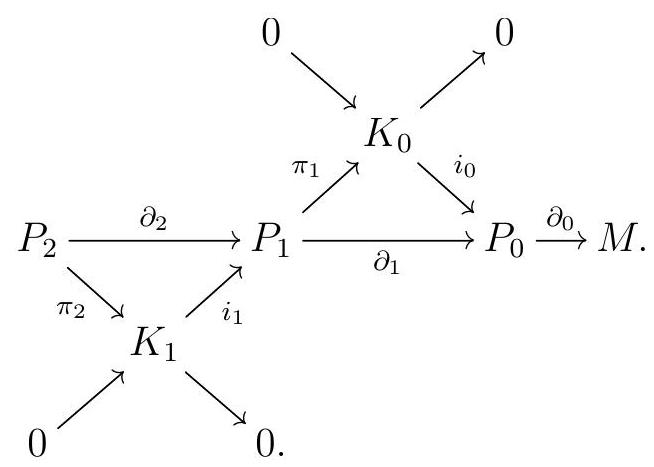
At each stage, \(\pi_{i}: P_{i} \rightarrow K_{i} 1\) is a surjective map, \(K_{i}:=\) ker \(\partial_{i}, i_{i}\) is the inclusion of the kernel of \(\partial_{i}\) into \(P_{i}\text{,}\) and we get short exact sequences
\begin{equation*}
0 \longrightarrow K_{n+1} \stackrel{i_{n} \quad 1}{\longrightarrow} P_{n+1} \stackrel{\pi_{n} \stackrel{1}{\longrightarrow}}{\longrightarrow} K_{n} \longrightarrow 0
\end{equation*}
In fact, \(\operatorname{im}\left(i_{n+1}\right)=\operatorname{ker} \partial_{n+1}=\operatorname{ker}\left(i_{n} \pi_{n+1}\right)=\operatorname{ker} \pi_{n+1}\text{.}\) We can continue this process for as long as \(P_{n} \neq 0\text{,}\) and the resulting sequence will be a projective resolution for \(M\text{.}\)
A free resolution
\begin{equation*}
\cdots \longrightarrow F_{2} \longrightarrow F_{1} \longrightarrow F_{0} \longrightarrow M
\end{equation*}
gives us a detailed description of our module \(M\text{:}\)
- \(F_{0}\) gives us generators for \(M\text{.}\)
- \(F_{1}\) gives us generators for all the relations among our generators for \(M\text{.}\)
- The next module describes the relations among the relations among our generators. And so on.
Definition 5.3. Length of Projective Resolution.
If \(P\) is a projective resolution of \(M\text{,}\) we say that \(P\) has length \(d\) if \(P_{n}=0\) for all \(n>d\) and \(P_{d} \neq 0\text{.}\) If no such \(d\) exists, we say that \(P\) has infinite length. If \(M\) has no finite projective resolution, we say that \(M\) has infinite projective dimension; otherwise, the projective dimension of \(M\) is the smallest length of a projective resolution.
Remark 5.4. Projective Dimension \(0\) iff Projective.
A module \(M\) has \(\operatorname{pdim}(M)=0\) if and only \(M\) is projective. Indeed, note that if \(M\) is projective, then
\begin{equation*}
0 \underset{0}{M} M \longrightarrow M \longrightarrow 0
\end{equation*}
is a projective resolution of \(M\text{.}\) On the other hand, if \(M\) has a projective resolution
\begin{equation*}
0 \longrightarrow \underset{0}{P} P \longrightarrow M \longrightarrow 0
\end{equation*}
then exactness tells us that \(P \cong M\text{.}\)
Example 5.5. Projective Resolution for \(\mathbb{Z} / 2\) over \(\mathbb{Z}\).
Let us construct a free resolution for \(\mathbb{Z} / 2\) over \(\mathbb{Z}\text{.}\) First, since \(\mathbb{Z} / 2\) has only one generator, we can start with the canonical surjection \(\pi: \mathbb{Z} \rightarrow \mathbb{Z} / 2\text{.}\) Note that \(\operatorname{ker} \pi=(2)\) is generated by just one element again, so we can take
\begin{equation*}
\mathbb{Z} \stackrel{2}{\longrightarrow} \mathbb{Z} \stackrel{\pi}{\longrightarrow} \mathbb{Z} / 2
\end{equation*}
But now the map \(\mathbb{Z} \stackrel{2}{\rightarrow} \mathbb{Z}\) is injective, so we are done, and
\begin{equation*}
0 \longrightarrow \mathbb{Z} \stackrel{2}{\longrightarrow} \mathbb{Z} \longrightarrow \mathbb{Z} / 2 \longrightarrow 0
\end{equation*}
is a free resolution for \(\mathbb{Z} / 2\text{.}\) This shows that \(\operatorname{pdim}(\mathbb{Z} / 2) \leqslant 1\text{.}\) Also, \(\mathbb{Z} / 2\) is not projective: we showed in Example 3.26 that \(\operatorname{Hom}_{\mathbb{Z}}(\mathbb{Z} / 2, \quad)\) is not exact. Thus \(\operatorname{pdim}(\mathbb{Z} / 2)=1\text{.}\)
Example 5.6. Projective Resolution for \(k\) over \(k[x] /\left(x^{3}\right)\).
Consider a field \(k\) and \(R=k[x] /\left(x^{3}\right)\text{.}\) Let us construct a free resolution for \(M=R /(x)\text{.}\) We can start with the canonical surjection \(R \rightarrow M\text{;}\) the kernel is \((x)\text{,}\) which is cyclic, so our resolution begins with
\begin{equation*}
R \stackrel{x}{\longrightarrow} R \longrightarrow M
\end{equation*}
Now the kernel of \(R \stackrel{x}{\rightarrow} R\) is \(\left(x^{2}\right)\text{,}\) which is again cyclic. Our resolution continues with
\begin{equation*}
R \stackrel{x^{2}}{\longrightarrow} R \stackrel{x}{\longrightarrow} R \longrightarrow M
\end{equation*}
Next, we need to compute the kernel of multiplication by \(x^{2}\text{;}\) but that is \((x)\text{,}\) a cyclic module, and the next step in the resolution is
\begin{equation*}
R \stackrel{x}{\longrightarrow} R \stackrel{x^{2}}{\longrightarrow} R \stackrel{x}{\longrightarrow} R \longrightarrow M .
\end{equation*}
But now we have a repeating pattern! Our two-periodic resolution goes on forever:
\begin{equation*}
\cdots \longrightarrow R \stackrel{x^{2}}{\longrightarrow} R \stackrel{x}{\longrightarrow} R \stackrel{x^{2}}{\longrightarrow} R \stackrel{x}{\longrightarrow} R \longrightarrow M
\end{equation*}
In fact, it turns out that \(\operatorname{pdim}(M)=\infty\text{.}\) But to really justify that, we need to understand that this is a minimal free resolution.
Subsection A Brief Introduction to Graded Modules
“”―
To talk about minimal free resolutions we need some reasonable conditions to hold. For the rest of the section, all rings will be commutative, and in fact we will be focusing on two types of rings: commutative local rings or \(\mathbb{N}\)-graded algebras over fields.
Example 5.7.
When \(k\) is a field, the polynomial ring \(R=k\left[x_{1}, \ldots, x_{n}\right]\) can be given an \(\mathbb{N}\)-grading by setting \(\operatorname{deg}\left(x_{i}\right)=d_{i}\) for some \(d_{i} \in \mathbb{N}\text{.}\) The most common \(\mathbb{N}\)-grading, also known as the standard grading, is the one where we declare \(\operatorname{deg}\left(x_{i}\right)=1\) for all \(i\text{.}\) Once we declare the degrees of the variables, we can extend that grading to all monomials as follows:
\begin{equation*}
\operatorname{deg}\left(x_{1}^{a_{1}} \cdots x_{n}^{a_{n}}\right)=a_{1} d_{1}+\cdots+a_{n} d_{n}
\end{equation*}
Definition 5.8.
A homogeneous element in \(R\) is any \(k\)-linear combination of monomials of the same degree. We write \(R_{i}\) for the set of all homogeneous elements of degree \(i\text{,}\) which is an abelian group under addition, and note that
\begin{equation*}
R=\bigoplus_{i} R_{i}
\end{equation*}
Note also that \(R_{i} R_{j} \subseteq R_{i+j}\) for all \(i\) and \(j\text{.}\)
More generally, a graded ring is any ring that can be decomposed in pieces of this form, meaning that
\begin{equation*}
R=\bigoplus_{i} R_{i} \quad \text { and } \quad R_{i} R_{j}=R_{i+j}
\end{equation*}
The elements in \(R_{i}\) are called homogeneous elements of degree \(i\text{.}\) Similarly, a graded \(R\)-module is a module such that
\begin{equation*}
M=\bigoplus_{i} M_{i} \quad \text { and } \quad R_{i} M_{j}=M_{i+j}
\end{equation*}
A homomorphism of graded \(R\)-modules \(\varphi: M \rightarrow N\) that such that \(\varphi\left(M_{i}\right) \subseteq N_{i+d}\) for all \(i\) is a graded map of degree \(d\text{.}\) Any graded map can be thought of as a map of degree \(0\) by shifting degrees. We write \(M(d)\) for the graded \(R\)-module with \(M(d)_{i}=M_{i} d\text{.}\)
When \(R=k\left[x_{1}, \ldots, x_{n}\right]\) is standard graded,
\begin{equation*}
R_{i}=\bigoplus_{a_{1}+\cdots+a_{n}=i} x_{1}^{a_{1}} \cdots x_{n}^{a_{n}}
\end{equation*}
Note here that \(0\) can be though of as a homogeneous element of any degree; one sometimes declares \(\operatorname{deg}(0)=\infty\text{.}\) An ideal \(I\) in \(R\) is a homogeneous ideal if it can be generated by homogeneous elements; one can show that this is equivalent to
\begin{equation*}
I=\bigoplus_{i}\left(I \cap R_{i}\right)
\end{equation*}
Finally, whenever \(I\) itself is homogeneous, the grading on \(R\) passes onto \(R / I\text{,}\) with
\begin{equation*}
(R / I)_{i}=R_{i} / I_{i}
\end{equation*}
We will be concerned with finitely generated \(\mathbb{N}\)-graded \(k\)-algebras \(R\) with \(R_{0}=k\text{,}\) which are of the form \(R=k\left[x_{1}, \ldots, x_{n}\right] / I\) for some homogeneous ideal \(I\text{.}\) One nice feature of such rings is that while there might be many maximal ideals, there is only one homogeneous maximal ideal, which is given by
\begin{equation*}
R_{+}:=\bigoplus_{i>0} R_{i}
\end{equation*}
In many ways, the behavior of such a graded ring and its unique homogeneous maximal ideal \(R_{+}\)is an analogue to the behavior of a local ring \(R\) and its unique maximal ideal ideal , though one always needs to provide a separate proof for the graded and local versions.
Subsection Uniqueness of Minimal Projective Resolutions
“”―
Definition 5.9. Minimal Complex.
Let \((R, \fm)\) be either a commutative local ring or a commutative \(\mathbb{N}\)-graded \(k\)-algebra with \(R_{0}=k\) and homogeneous maximal ideal \(\fm=R_{+}\text{.}\) A complex
\begin{equation*}
\cdots \longrightarrow F_{2} \stackrel{\partial_{2}}{\longrightarrow} F_{1} \stackrel{\partial_{1}}{\longrightarrow} F_{0} \longrightarrow \cdots
\end{equation*}
is minimal if \(\im\partial_{n+1} \subseteq \fm F_{n}\) for all \(n\text{.}\)
Remark 5.10.
Remark 5.8. A complex \((F, \partial)\) is minimal if and only if the differentials in the complex \(F \otimes_{R} R /\fm\) are all identically \(0\text{.}\) If all the \(F_{i}\) are free, fix a basis for each \(F_{i}\text{.}\) The differentials \(\partial_{i}\) can be represented by matrices, though possibly infinite. We will be primarily interested in the case of finitely generated modules over noetherian rings, which are finitely presented, so all the \(F_{i}\) are finitely generated as well, and each \(\partial_{i}\) corresponds to some finite matrix. In this case, our complex is minimal if and only if all the entries in the matrices representing \(\partial_{i}\) are in \(\fm\text{,}\) whatever our chosen bases are.
Lemma 5.11.
Let \(R\) be a commutative ring. Suppose \((R, \quad)\) is either a local ring or an \(\mathbb{N}\) graded \(k\)-algebra with \(R_{0}=k\) and homogeneous maximal ideal \(=R_{+}\text{.}\) Let \(M\) be a finitely generated (graded) \(R\)-module. A free resolution
\begin{equation*}
F=\cdots \longrightarrow F_{2} \stackrel{\partial_{2}}{\longrightarrow} F_{1} \stackrel{\partial_{1}}{\longrightarrow} F_{0}
\end{equation*}
for \(M\) is a minimal complex if and only if for all \(n\) the module \(F_{n}\) is the free module on a minimal set of generators for \(\ker\partial_{n} 1\text{,}\) which in the graded case must be homogeneous.
Proof.
Suppose there exists an \(n\) such that \(F_{n}\) is the free module on some non-minimal set of generators \(m_{1}, \ldots, m_{s}\) for \(K_{n} 1:=\operatorname{ker} \partial_{n}{ }_{1}\text{;}\) so there is a basis \(e_{1}, \ldots, e_{s}\) for \(F_{n}\) such that \(\partial_{n}\left(e_{i}\right)=m_{i}\text{,}\) and the images of \(m_{1}, \ldots, m_{s}\) in the vector space \(K_{n} 1 / \fm K_{n} 1\) are linearly dependent. Then there exists \(r_{1}, \ldots, r_{s} \in R\text{,}\) not all in \(\fm\text{,}\) such that \(r_{1} m_{1}+\cdots+r_{s} m_{s}=0\) in \(R\text{.}\) In the graded case, we can take all these coefficients \(r_{i}\) to be homogeneous. At least one of these coefficients is not in \(\fm\text{,}\) and thus it must be invertible, so we can multiply by its inverse. So perhaps after reordering our elements, we get
1
In the graded case, homogeneous elements not in \(\fm\) are nonzero elements in \(R=k\text{,}\) and thus invertible.
\begin{equation*}
m_{s}=r_{1} m_{1}+\cdots+r_{s}{ }_{1} m_{s} 1.
\end{equation*}
Then
\begin{equation*}
e_{s} \quad r_{1} e_{1} \quad \cdots \quad r_{s \quad 1} e_{s}{ }_{1} \in \operatorname{ker} \partial_{n}=\operatorname{im} \partial_{n+1}
\end{equation*}
is not in \(\fm F_{n}\text{,}\) so \(\im \partial_{n+1}\not\in\fm F_{n}\text{.}\)
Now suppose that im \(\partial_{n+1}\not\in\fm F_{n}\) for some \(n\text{.}\) Let \(e_{1}, \ldots, e_{s}\) be a basis for \(F_{n}\text{,}\) so that \(\partial_{n}\left(e_{1}\right), \ldots, \partial\left(e_{s}\right)\) form a generating set for \(K_{n} \quad 1:=\operatorname{ker} \partial_{n} \quad\text{.}\) By assumption, \(\operatorname{ker} \partial_{n}=\operatorname{im} \partial_{n+1}\) contains some (homogeneous, in the graded case) element that is not in \(\fm F_{n}\text{.}\) So there is an element \(r_{1} e_{1}+\cdots+r_{s} e_{s} \in \operatorname{ker} \partial_{n}\) not in \(\fm F_{n}\text{.}\) In particular, some \(r_{i} \notin \fm\text{,}\) which we can assume without loss of generality to be \(r_{1}\text{.}\) Multiplying by the inverse of \(r_{1}\text{,}\) we get some \(c_{i} \in R\) such that
\begin{equation*}
e_{1} \quad c_{2} e_{2} \quad \cdots \quad c_{s} e_{s} \in \operatorname{ker} \partial_{n}
\end{equation*}
so
\begin{equation*}
\partial_{n}\left(e_{1}\right)=c_{2} \partial_{n}\left(e_{2}\right)+\cdots+c_{s} \partial_{n}\left(e_{s}\right).
\end{equation*}
This is a nontrivial relation among our chosen set of generators of \(K_{n}\text{,}\) which must then be non-minimal.
So to construct a minimal free resolution of \(M\text{,}\) we simply take as few generators as possible in each step. Ultimately, we can talk about the minimal free resolution of \(M\text{.}\) To show that, we need some definitions and a lemma.
Definition 5.12. Direct Sum of Complexes.
Let \((F, \partial)\) and \((G, \delta)\) be complexes of \(R\)-modules. The direct sum of \(F\) and \(G\) is the complex of \(R\)-modules \(F \oplus G\) that has \((F \oplus G)_{n}=F_{n} \oplus G_{n}\text{,}\) with differentials given by
\begin{equation*}
\begin{gathered}
F_{n+1} \stackrel{\partial_{n 1}}{\longrightarrow} F_{n} \\
\oplus \\
G_{n+1} \underset{\delta_{n 1}}{\longrightarrow} G_{n}
\end{gathered}
\end{equation*}
together with the complex maps \(F \rightarrow F \oplus G\) and \(G \rightarrow F \oplus G\) given by the corresponding inclusion in each homological degree.
Exercise 5.13.
Show that the direct sum of complexes is the coproduct in the category \(\mathrm{Ch}(R)\text{.}\)
Proposition 5.14.
The homology of a direct sum is the direct sum of the homologies.
Proof.
Notice
\begin{equation*}
\left(\partial_{n}, \delta_{n}\right)(a, b)=(0,0) \Longleftrightarrow \partial_{n}(a)=0 \text { and } \delta_{n}(b)=0 \text {, }
\end{equation*}
and
\begin{equation*}
(a, b) \in \operatorname{im}\left(\partial_{n}, \delta_{n}\right) \text { if and only if } a \in \operatorname{im} \partial_{n} \text { and } b \in \operatorname{im} \partial_{n}
\end{equation*}
Thus
\begin{equation*}
\mathrm{H}_{n}(F \oplus G)=\frac{\operatorname{ker}\left(\partial_{n}, \delta_{n}\right)}{\operatorname{im}\left(\partial_{n+1}, \delta_{n+1}\right)}=\frac{\operatorname{ker} \partial_{n}}{\operatorname{im} \partial_{n+1}} \oplus \frac{\operatorname{ker} \delta_{n}}{\operatorname{im} \delta_{n+1}}=\mathrm{H}_{n}(F) \oplus \mathrm{H}_{n}(G)
\end{equation*}
Remark 5.15.
More generally, this is true because Ch(R) is an abelian category, where all additive functors preserve direct sums.
Remark 5.16. Direct Summands in \(Ch(R)\).
Suppose that \(C\) is a subcomplex of \(D\text{,}\) and that we know that each \(C_{n}\) is a direct summand of \(D_{n}\text{,}\) say by \(D_{n}=C_{n} \oplus B_{n}\text{.}\) In order for \(C\) to be a free summand of \(D\text{,}\) we also need that the differentials of \(D\) behave well with \(C\text{:}\) for each \(n\text{,}\) we need to check that \(\partial_{n}\left(B_{n}\right) \subseteq B_{n} \quad 1\) and \(\partial_{n}\left(C_{n}\right) \subseteq C_{n} 1\text{.}\) This does not always hold.
Definition 5.17. Trivial Complex.
A complex \(C\) of \(R\)-modules is trivial if it is a direct sum of complexes of the form
\begin{equation*}
\cdots \longrightarrow 0 \longrightarrow R \stackrel{1}{\longrightarrow} R \longrightarrow 0 \longrightarrow \cdots
\end{equation*}
Example 5.18. Trival Complex.
The complex
\begin{equation*}
0 \longrightarrow R \stackrel{\left(\begin{array}{l}
1 \\
0
\end{array}\right)}{\longrightarrow} R^{2} \stackrel{0 \quad 1}{\longrightarrow} R \longrightarrow 0 \quad \begin{array}{r}
0 \longrightarrow R \stackrel{1}{\longrightarrow} R \longrightarrow 0 \\
0 \longrightarrow R \stackrel{1}{\longrightarrow} R \longrightarrow 0
\end{array}
\end{equation*}
is trivial.
Remark 5.19. Trivial Complexes are Exact.
Trivial complexes are exact: they are the direct sums of exact complexes, and by Proposition 5.14 taking homology commutes with direct sums.
Lemma 5.20.
Let \((R, \fm)\) be either a commutative local ring or a commutative \(\mathbb{N}\)-graded \(k\)-algebra with \(R_{0}=k\) and homogeneous maximal ideal \(\fm=R_{+}\text{.}\) Every (graded) complex
\begin{equation*}
\cdots \longrightarrow T_{2} \stackrel{\partial_{2}}{\longrightarrow} T_{1} \stackrel{\partial_{1}}{\longrightarrow} T_{0} \longrightarrow 0
\end{equation*}
of finitely generated (graded) free \(R\)-modules that is exact everywhere must be trivial.
Proof.
Since \(T_{0}\) is projective, Theorem 4.6 says that the short exact sequence
\begin{equation*}
0 \longrightarrow \operatorname{ker} \partial_{1} \longrightarrow T_{1} \stackrel{\partial_{1}}{\longrightarrow} T_{0} \longrightarrow 0
\end{equation*}
splits, so \(T_{1} \cong \operatorname{ker} \partial_{1} \oplus T_{0}\text{.}\) In fact, \(\partial_{1}\) is the canonical projection map \(T_{0} \oplus \operatorname{ker} \partial_{1} \rightarrow T_{0}\text{,}\) and our original exact sequence breaks off as
\begin{equation*}
\begin{aligned}
\cdots \longrightarrow
& T_{2} \stackrel{\partial_{2}}{\longrightarrow} \operatorname{ker} \partial_{1} \longrightarrow 0 \\
& \oplus \\
0 \longrightarrow
& T_{0} \stackrel{1}{\longrightarrow} T_{0} \longrightarrow 0
\end{aligned}
\end{equation*}
In particular, since \(0 \longrightarrow T_{0} \stackrel{1}{\longrightarrow} T_{0} \longrightarrow 0\) is trivial and homology commutes with taking direct sums of complexes, by Proposition 5.14, we conclude that
\begin{equation*}
\cdots \longrightarrow T_{2} \stackrel{\partial_{2}}{\longrightarrow} \operatorname{ker} \partial_{1} \longrightarrow 0
\end{equation*}
is also exact everywhere. In particular, we have also shown that ker \(\partial_{1}\) is a (graded) direct summand of the (graded) free \(R\)-module \(T_{1}\text{.}\) In the local case, \(\ker\partial_{1}\) is a projective by Theorem 4.9, and thus free by Exercise 4.48.
In the graded setting, ?? says that ker \(\partial_{1}\) is free. So we are back at our original situation, and we can repeat the same argument repeatedly to show that our complex breaks off as the direct sum of the trivial complexes
\begin{equation*}
0 \longrightarrow \operatorname{ker} \partial_{n} \stackrel{1}{\longrightarrow} \operatorname{ker} \partial_{n} \longrightarrow 0
\end{equation*}
and must therefore be trivial.
Theorem 5.21.
Let
\begin{equation*}
P=\cdots \longrightarrow P_{n} \longrightarrow \cdots P_{1} \stackrel{\partial_{1}}{\longrightarrow} P_{0} \stackrel{\partial_{0}}{\longrightarrow} M \longrightarrow 0
\end{equation*}
be a complex of projective \(R\)-modules, and let
\begin{equation*}
C=\cdots \longrightarrow C_{n} \longrightarrow \cdots C_{1} \stackrel{\delta_{1}}{\longrightarrow} C_{0} \stackrel{\delta_{0}}{\longrightarrow} N \longrightarrow 0
\end{equation*}
be an exact complex. Every \(R\)-module map \(f: M \rightarrow N\) lifts to a map of complexes \(\varphi: P \rightarrow C\text{,}\) and any two such lifts are homotopic.
Moreover, if \(R\) is a commutative graded \(k\)-algebra, \(M\) and \(N\) are finitely generated graded \(R\)-modules, \(P_{n}\) and \(C_{n}\) are finitely generated graded \(R\)-modules, and \(f\) is a degree-preserving homomorphism, then the induced map of complexes is made out of degree-preserving \(R\) module maps.
Proof.
Since \(P_{0}\) is projective and \(\delta_{0}\) is surjective, there exists an \(R\)-module homomorphism \(\varphi_{0}\) such that
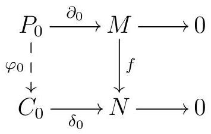
commutes. Notice in fact that
\begin{equation*}
\begin{aligned}
\delta_{0} \varphi_{0}\left(\operatorname{im} \partial_{1}\right) & \subseteq \delta_{0} \varphi_{0}\left(\operatorname{ker} \partial_{0}\right) & & \text { because } P \text { is a complex } \\
& =f \partial_{0}\left(\operatorname{ker} \partial_{0}\right) & & \text { by commutativity of the square above } \\
& =0, & &
\end{aligned}
\end{equation*}
so \(\varphi_{0}\left(\operatorname{im} \partial_{1}\right) \subseteq \operatorname{ker} \delta_{0}=\operatorname{im} \delta_{1}\text{.}\) In the graded case, note that we can define \(\varphi_{0}\) by sending the elements \(b_{i}\) in a homogeneous basis of \(P_{0}\) to homogeneous \(c_{i} \in C_{0}\) such that \(\delta_{0}\left(c_{i}\right)=f \partial_{0}\left(b_{i}\right)\text{.}\)
We now proceed by induction. Suppose we have constructed \(P_{n}{ }_{1} \stackrel{\varphi_{n}}{\rightarrow} \rightarrow C_{n}{ }_{1}\) such that \(\varphi_{n} \quad\left(\operatorname{im} \partial_{n}\right) \subseteq \operatorname{im} \delta_{n}\text{.}\) Since \(P_{n}\) is projective, there exists a map \(\varphi_{n}\) such that
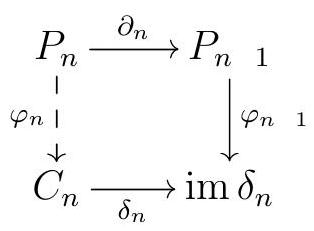
commutes. And again,
\begin{equation*}
\begin{array}{rlr}
\delta_{n} \varphi_{n}\left(\operatorname{im} \partial_{n+1}\right) & \subseteq \delta_{n} \varphi_{n}\left(\operatorname{ker} \partial_{n}\right) \\
& =\varphi_{n}{ }_{1} \partial_{n}\left(\operatorname{ker} \partial_{n}\right) \\
& =0,
\end{array} \quad \text { by commutativity of the square above }
\end{equation*}
so \(\varphi_{n}\left(\operatorname{im} \partial_{n+1}\right) \subseteq \operatorname{ker} \delta_{n}=\operatorname{im} \delta_{n+1}\text{.}\)
We can now inductively construct our map of complexes \(\varphi\) lifting \(f\text{.}\)
Now suppose we are given two such maps of complexes \(P \rightarrow C\) lifting \(f\text{,}\) say \(\varphi\) and \(\psi\text{.}\) Note that \(\varphi \quad \psi\) and 0 are two liftings of the zero map. We are going to show that any map lifting the zero map \(M \rightarrow N\) must be nullhomotopic, which will then imply that \(\varphi\) and \(\psi\) are homotopic as well (essentially via the same homotopy!).
So let \(\varphi: P \rightarrow C\) be a map of complexes lifting the zero map \(M \rightarrow N\text{,}\) so that the following commutes:
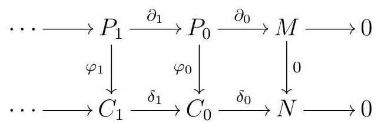
We will explicitly construct a nullhomotopy for \(\varphi\) by induction. First, set \(h_{n}=0\) for all \(n<0\text{.}\) The commutativity of the rightmost square tells us that \(\delta_{0} \varphi_{0}=0\text{,}\) so
\begin{equation*}
\operatorname{im} \varphi_{0} \subseteq \operatorname{ker} \delta_{0}=\operatorname{im} \delta_{1}
\end{equation*}
Since \(P_{0}\) is projective, there exists an \(R\)-module homomorphism \(h_{0}\) such that
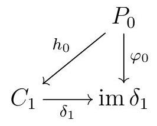
commutes, and thus \(\varphi_{0}=\delta_{1} h_{0}=\delta_{1} h_{0}+h_{1} \partial_{0}\text{.}\) Notice also that
\begin{equation*}
\begin{aligned}
& \delta_{1}\left(\varphi_{1} \quad h_{0} \partial_{1}\right)=\varphi_{0} \partial_{1} \quad \delta_{1} h_{0} \partial_{1} \quad \text { because } \varphi \text { is a map of complexes } \\
& =\left(\begin{array}{lll}
\varphi_{0} & \delta_{1} h_{0}
\end{array}\right) \partial_{1} \quad \text { factoring } \\
& =0 \quad \text { since } \varphi_{0}=\delta_{1} h_{0},
\end{aligned}
\end{equation*}
so \(\operatorname{im}\left(\varphi_{1} \quad h_{0} \partial_{1}\right) \subseteq \operatorname{ker} \delta_{1}=\operatorname{im} \delta_{2}\text{.}\)
Now assume that we have constructed maps \(h_{0}, \ldots, h_{n}\) such that \(\varphi_{n}=h_{n}{ }_{1} \partial_{n}+\delta_{n+1} h_{n}\) and \(\operatorname{im}\left(\varphi_{n+1} \quad h_{n} \partial_{n+1}\right) \subseteq \operatorname{im} \delta_{n+2}\text{.}\) Since \(P_{n+1}\) is projective, we can find a map \(h_{n+1}\) such that
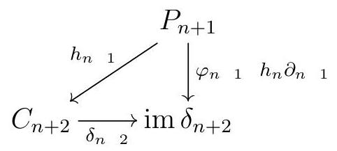
commutes, so \(\varphi_{n+1}=\delta_{n+2} h_{n+1}+h_{n} \partial_{n+1}\text{.}\) Now
\begin{equation*}
\begin{aligned}
& \delta_{n+2}\left(\varphi_{n+2} \quad h_{n+1} \partial_{n+2}\right)=\varphi_{n+1} \partial_{n+2} \quad \delta_{n+2} h_{n+1} \partial_{n+2} \quad \text { since } \varphi \text { is a map of complexes } \\
& =\left(\varphi_{n+1} \quad \delta_{n+2} h_{n+1}\right) \partial_{n+2} \\
& =h_{n} \partial_{n+1} \partial_{n+2} \quad \text { by commutativity of the triangle above } \\
& =0 \quad \text { since } \partial_{n+1} \partial_{n+2}=0 \text {. }
\end{aligned}
\end{equation*}
So we again obtain \(\operatorname{im}\left(\varphi_{n+2} \quad h_{n+1} \partial_{n+2}\right) \subseteq \operatorname{ker} \delta_{n+1}=\operatorname{im} \delta_{n+2}\text{.}\) By induction, this process allows us to construct our homotopy \(h\text{.}\)
Theorem 5.22. Uniqueness of Minimal Free Resolutions.
Let \((R, \fm)\) be a commutative ring, either a local ring or a \(\mathbb{N}\)-graded graded \(k\)-algebra with \(R_{0}=k\) and homogeneous maximal ideal \(\fm=R_{+}\text{.}\) If \(F\) is a minimal free resolution of \(M\text{,}\) then any free resolution for \(M\) is isomorphic to a direct sum of \(F\) with a trivial complex. In particular, the minimal free resolution of \(M\) is unique up to isomorphism.
Proof.
Suppose that \(G\) is another free resolution of \(M\text{.}\) By Theorem 5.21, there are complex maps \(\psi: G \rightarrow F\) and \(\varphi: F \rightarrow G\) that lift the identity map on \(M\text{.}\) Then \(\psi \varphi: F \rightarrow F\) is a map of complexes that lifts the identity on \(M\text{,}\) and thus by Theorem 5.21 \(\varphi \psi\) must be homotopic to the identity on \(F\text{.}\) Let \(h\) be a homotopy between \(\psi \varphi\) and the identity, so that for all \(n\text{,}\)
\begin{equation*}
\text { id } \quad \psi_{n} \varphi_{n}=\partial_{n+1} h_{n}+h_{n}{ }_{1} \partial_{n}
\end{equation*}
Since \(F\) is minimal, we have \(\operatorname{im} \partial_{n} \subseteq \fm F_{n}\) and \(\operatorname{im} \partial_{n+1} \subseteq \fm F_{n}\text{,}\) so \(\operatorname{im}\left(\mathrm{id} \quad \psi_{n} \varphi_{n}\right) \subseteq \fm F_{n}\) for all \(n\text{.}\) Our first goal will be to show that \(\psi \varphi\) is an isomorphism.
First we do the local case. Let \(A\) be the matrix representing \(\psi_{n} \varphi_{n}\) in some fixed basis for \(F_{n}\text{,}\) and note that \(\id\psi_{n} \varphi_{n}\) is represented by \(\Id-A\text{,}\) so all the entries in \(\Id-A\) must be in \(\fm\text{.}\) Our matrix \(A\) can be written as
\begin{equation*}
A=\left(\begin{array}{cccc}
1+a_{11} & a_{12} & \ldots & a_{1 s} \\
a_{21} & 1+a_{22} & \cdots & a_{2 s} \\
& \ddots & & \\
a_{s 1} & \cdots & a_{s s} 1 & 1+a_{s s}
\end{array}\right)
\end{equation*}
for some \(a_{i j} \in\text{,}\) so that \(\operatorname{det}(A)=1+a\) for some \(a \in\text{.}\) In particular, \(\operatorname{det}(A)\) is invertible, and \(\psi_{n} \varphi_{n}\) is an isomorphism.
In the graded case, we have to be a bit more careful: not all elements that are not in are invertible, this is only true for homogeneous elements. First, we fix a basis of homogeneous elements \(f_{1}, \ldots, f_{s}\) for \(F_{n}\) with \(\operatorname{deg}\left(f_{1}\right) \leqslant \operatorname{deg}\left(f_{2}\right) \leqslant \cdots \leqslant \operatorname{deg}\left(f_{s}\right)\text{,}\) and set \(\Phi:=\) id \(\psi_{n} \varphi_{n}\text{.}\) Since our map \(\Phi\) is degree-preserving, \(\Phi\left(f_{i}\right)\) is homogeneous for each \(i\text{,}\) and so we can write \(\Phi\left(f_{i}\right)\) as a linear combination of our basis elements \(f_{1}, \ldots, f_{s}\) using only pieces of degree \(\operatorname{deg}\left(\Phi\left(f_{i}\right)\right)\text{.}\) We obtain a matrix \(C=\left(c_{i j}\right)\) such that \(c_{i j} \neq 0 \Longrightarrow \operatorname{deg}\left(c_{i j}\right)=\operatorname{deg}\left(f_{j}\right) \operatorname{deg}\left(f_{i}\right)\text{,}\) and \(C\) represents \(\Phi\text{,}\) meaning \(\Phi\left(f_{i}\right)=c_{i 1} f_{1}+\cdots+c_{i s} f_{s}\) for all \(i\text{.}\) Now all the entries of \(C=\mathrm{Id} \quad A\) must be in, so in particular we must have \(a_{i i}=1\) for all \(i\text{.}\) Moreover, since we chose our basis to have increasing degrees, \(\operatorname{deg}\left(c_{i j}\right)=0\) whenever \(i<j\text{.}\) Since we must also have \(c_{i j} \in \fm\) whenever \(i \neq j\text{,}\) we conclude that \(c_{i j}=0\) for \(i<j\text{.}\) We conclude that \(A\) is an upper triangular matrix. Finally, \(\operatorname{det}(A)=a_{11} \cdots a_{s s}=1\text{,}\) and \(A\) is invertible.
So we have shown in both cases that \(\psi_{n} \varphi_{n}\) is an isomorphism for all \(n\text{.}\) By Exercise 2.6, \(\psi \varphi\) is in fact an isomorphism of complexes, so let \(\xi: F \rightarrow F\) be its inverse. Now we want to claim that \(\varphi\) splits as a map of complexes. Notice that
\begin{equation*}
(\xi \psi) \varphi=\xi(\psi \varphi)=\mathrm{id}_{F}
\end{equation*}
so let us take \(\xi \psi\) to be our proposed splitting for \(\varphi\text{.}\) Note that \((\xi \psi)_{n} \varphi_{n}=\operatorname{id}_{n}\) implies that our map \(\xi \psi\) provides splittings for the \(R\)-module maps in each degree, by Lemma 2.31, so \(G_{n}=\varphi_{n}\left(F_{n}\right) \oplus \operatorname{ker}\left(\xi_{n} \psi_{n}\right)\text{.}\) We just need to prove that this splitting holds as complexes, that is, that \(G=\varphi(F) \oplus \operatorname{ker}(\xi \psi)\) as complexes. So let \(K:=\operatorname{ker}(\xi \psi)\text{,}\) and denote the differential in \(G\) by \(\delta\text{.}\) We need to check that \(\delta(\varphi(F)) \subseteq \varphi(F)\) and \(\delta(K) \subseteq K\text{.}\)
Since \(\varphi\) is a map of complexes, \(\delta \varphi=\varphi \partial\text{,}\) so we do get \(\delta(\varphi(F)) \subseteq \varphi(F)\text{.}\) Given \(a \in K_{n+1}\text{,}\) we can write \(\delta_{n+1}(a)=\varphi(b)+c\) for some \(b \in F_{n}\) and \(K_{n}\text{,}\) since \(G_{n}=\varphi\left(F_{n}\right) \oplus K_{n}\text{.}\) Then
\begin{equation*}
\begin{aligned}
b & =\operatorname{id}(b) \\
& =\xi_{n} \psi_{n} \varphi_{n}(b) \\
& =\xi_{n} \psi_{n}\left(\varphi_{n}(b)+c\right) \\
& =\xi_{n} \psi_{n} \delta_{n+1}(a) \\
& =\xi_{n} \delta_{n+1} \psi_{n}(a) \\
& =\delta_{n+1}\left(\xi_{n} \psi_{n}\right)(a) \\
& =0
\end{aligned}
\end{equation*}
since \(\xi_{n} \psi_{n}\) is a splitting for \(\varphi_{n}\) since \(c \in K_{n}\) by assumption since \(\psi\) is a map of complexes since \(\xi\) is a map of complexes since \(a \in K_{n}\text{.}\)
We conclude that \(\delta_{n+1}(a) \in K_{n}\text{,}\) and \(\delta(K) \subseteq K\text{.}\) We have now shown that \(G \cong F \oplus K\text{.}\)
Finally, we are going to show that \(K\) is a trivial complex. First, we claim that \(K_{n}\) is free for all \(n\text{.}\) We have already shown that \(K_{n}\) is a (graded) direct summand of a (graded) free module. In the local case, Theorem 4.9 says that \(K_{n}\) is projective, and then Exercise 4.48 says that \(K_{n}\) must in fact be free. In the graded setting, one can show that any graded module which is a direct sum of a finitely generated graded \(R\)-module is a graded free module. In both cases, \(K_{n}\) is free.
Since \(G \cong F \oplus K\text{,}\) we have \(\mathrm{H}_{n}(G) \cong \mathrm{H}_{n}(F) \oplus \mathrm{H}_{n}(K)\text{.}\) Since \(F\) and \(G\) are both (graded) free resolutions for \(M\text{,}\) they have the same homology: \(\mathrm{H}_{n}(F)=\mathrm{H}_{n}(G)=0\) for all \(n \neq 0\text{,}\) and \(\mathrm{H}_{0}(F)=\mathrm{H}_{0}(G)=M\text{.}\) We conclude that \(K\) is exact everywhere. Finally, Lemma 5.20 shows that \(K\) is trivial.
Theorem 5.23. Horseshoe Lemma.
Consider a short exact sequence of modules
\begin{equation*}
0 \longrightarrow A \stackrel{f}{\longrightarrow} B \stackrel{g}{\longrightarrow} C \longrightarrow 0
\end{equation*}
Let \(P\) be a projective resolution of \(A\text{,}\) and \(R\) be a projective resolution of \(C\text{.}\) There exists a projective resolution \(Q\) of \(B\) and maps of complexes \(F\) and \(G\) lifting \(f\) and \(g\) such that
\begin{equation*}
0 \longrightarrow P \stackrel{F}{\longrightarrow} Q \stackrel{G}{\longrightarrow} R \longrightarrow 0
\end{equation*}
is a short exact sequence of complexes.
Proof.
First, we need to introduce some general notation: given homomorphisms \(f: M \rightarrow L\) and \(g: N \rightarrow L\) with the same target, we will write \(f \oplus g\) for the homomorphism \(M \oplus N \rightarrow L\) given by \((f \oplus g)(m, n)=f(m)+g(n)\text{.}\) Moreover, we will denote the differential of \(P\) by \(\partial^{P}\text{,}\) and the differential of \(R\) by \(\partial^{R}\text{.}\)
For each \(n \geqslant 0\text{,}\) set \(Q_{n}:=P_{n} \oplus R_{n}\text{,}\) and let \(F_{n}: P_{n} \rightarrow Q_{n}\) and \(G_{n}: Q_{n} \rightarrow R_{n}\) be the canonical projections. By Corollary 4.11, \(Q_{n}\) is projective for all \(n\text{.}\) Moreover, we get short exact sequences
\begin{equation*}
0 \longrightarrow P_{n} \stackrel{F_{n}}{\longrightarrow} Q_{n} \stackrel{G_{n}}{\longrightarrow} R_{n} \longrightarrow 0
\end{equation*}
for all \(n\text{.}\) We will construct the missing differentials \(\partial^{Q}\) inductively.
Since \(R_{0}\) is projective and \(g\) is surjective, there exists \(\gamma\) such that
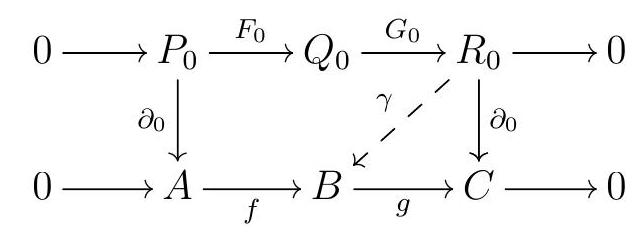
commutes. Set \(\partial_{0}^{Q}:=\left(f \partial_{0}^{P}\right) \oplus \gamma\text{.}\) The universal property of the coproduct guarantees that
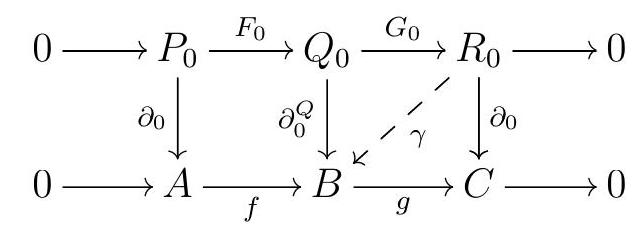
\begin{equation*}
\operatorname{ker} \partial_{0}^{P} \longrightarrow \operatorname{ker} \partial_{0}^{Q} \longrightarrow \operatorname{ker} \partial_{0}^{R}
\end{equation*}
is exact. We then proceed by induction, and at each step we apply the base case to
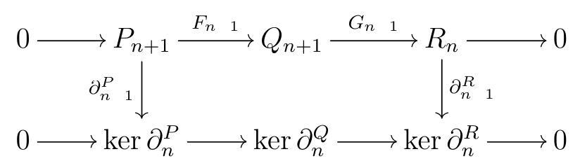
where the vertical arrows are surjective because \(P\) and \(R\) are projective resolutions and thus exact. Notice that by construction, the image of \(\partial_{n+1}^{Q}\) is contained in \(\operatorname{ker} \partial_{n}^{Q}\text{,}\) which guarantees that \(\partial\) is a differential.
This inductive process allows us to build a complex of projectives \(Q\) and a short exact sequence of complexes
\begin{equation*}
0 \longrightarrow P \stackrel{F}{\longrightarrow} Q \stackrel{G}{\longrightarrow} R \longrightarrow 0 .
\end{equation*}
Applying the Long Exact Sequence in Homology, we get exact sequences
\begin{equation*}
0=\mathrm{H}_{n}(P) \rightarrow \mathrm{H}_{n}(Q) \longrightarrow \mathrm{H}_{n}(R)=0
\end{equation*}
for all \(n \geqslant 1\text{,}\) and thus \(\mathrm{H}_{n}(Q)=0\text{.}\) Moreover, we constructed \(\delta_{0}^{Q}\) so that
\begin{equation*}
Q_{1} \stackrel{\delta_{1}}{\longrightarrow} Q_{0} \longrightarrow B
\end{equation*}
is exact, and thus \(\mathrm{H}_{0}(Q)=B\text{.}\) We conclude that \(Q\) is a projective resolution of \(B\text{.}\)
Remark 5.24.
why its called that
Subsection Syzygys and Betti Numbers
“”―
Now that we know that minimal free resolutions exist and are unique (in the local and graded settings), we will take the rest of this section to briefly discuss how minimal free resolutions contain a lot of important information about our modules. For example, we want to keep track of the kernels of the differentials in a minimal free resolution.
Definition 5.25. Syzygy.
Let \((R, \fm)\) be a commutative ring, either a local ring or an \(\mathbb{N}\)-graded \(k\)-algebra with \(R_{0}=k\) and homogeneous maximal ideal \(\fm=R_{+}\text{.}\) Let \(F\) be a minimal free resolution for the finitely generated (graded) \(R\)-module \(M\text{.}\) For each \(n \geqslant 1\text{,}\) the submodule
\begin{equation*}
\Omega_{n}(M):=\operatorname{im} \partial_{n}=\operatorname{ker} \partial_{n} 1
\end{equation*}
is the \(n\)th syzygy of \(M\text{.}\)
Remark 5.26.
For each \(n\text{,}\) we have a short exact sequence
\begin{equation*}
0 \longrightarrow \operatorname{ker} \partial_{n} \longrightarrow F_{n} \longrightarrow \operatorname{im} \partial_{n} \longrightarrow 0
\end{equation*}
But \(\ker\partial_{n}=\Omega_{n}(M)\) and \(\operatorname{im} \partial_{n}=\Omega_{n}{ }_{1}(M)\text{,}\) so we get a short exact sequence
\begin{equation*}
0 \longrightarrow \Omega_{n}(M) \longrightarrow F_{n} \longrightarrow \Omega_{n}{ }_{1}(M) \longrightarrow 0
\end{equation*}
Syzygies are indeed well-defined up to isomorphism.
Proposition 5.27. Syzygy’s Are Well-Defined.
Syzygies are indeed well-defined up to isomorphism.
Proof.
Suppose that \(F\) and \(G\) are two minimal free resolutions for \(M\text{.}\) By Theorem 5.22, there exists an isomorphism between \(F\) and \(G\text{,}\) say \(\varphi\text{.}\) Since \(\varphi\) is a map of complexes, \(\varphi \partial^{F}=\partial^{G} \varphi\text{,}\) and thus \(\varphi\) must send elements in ker \(\partial^{F}\) into elements in \(\ker\partial^{G}\text{.}\) Similarly, an inverse \(\psi\) to \(\varphi\) sends ker \(\partial^{G}\) into ker \(\partial^{F}\text{.}\) In each homological degree, the induced maps \(\operatorname{ker} \partial_{n}^{F} \rightarrow \operatorname{ker} \partial_{n}^{G}\) and \(\operatorname{ker} \partial_{n}^{F} \rightarrow \operatorname{ker} \partial_{n}^{G}\) are inverse, and thus isomorphisms. In the graded case, one can show that we obtain graded isomorphisms, so that the graded syzygies are also well-defined up to isomorphism.
The number of generators in each homological degree is also an important invariant.
Definition 5.28. Betti Number.
Let \((R, \fm)\) be a commutative ring, either a local ring or an \(\mathbb{N}\)-graded \(k\)-algebra with \(R_{0}=k\) and homogeneous maximal ideal \(\fm=R_{+}\text{.}\) Let \(F\) be a minimal free resolution for the finitely generated (graded) \(R\)-module \(M\text{.}\) The \(n\)th betti number of \(M\) is
\begin{equation*}
\beta_{i}(M):=\operatorname{rank} F_{i}=\mu\left(F_{i}\right)
\end{equation*}
In the graded case, we can also talk about graded betti numbers. When \(M\) is a graded module, we can write a resolution that keeps track of the grading.
Definition 5.29. Betti Table.
Let \(R\) be a commutative \(\mathbb{N}\)-graded graded \(k\)-algebra with \(R_{0}=k\) and homogeneous maximal ideal \(=R_{+}\text{.}\) Let \(M\) be a graded \(R\)-module. The \((i, j)\) th betti number of \(M, \beta_{i j}(M)\text{,}\) counts the number of generators of \(F_{i}\) in degree \(j\text{.}\) We often collect the betti numbers of a module in its betti table:
| \(\beta(M)\) | 0 | 1 | 2 | \(\cdots\) |
|---|---|---|---|---|
| 0 | \(\beta_{00}(M)\) | \(\beta_{01}(M)\) | \(\beta_{02}(M)\) | |
| 1 | \(\beta_{11}(M)\) | \(\beta_{12}(M)\) | \(\beta_{13}(M)\) | |
| 2 | \(\beta_{22}(M)\) | \(\beta_{23}(M)\) | ||
| \(\vdots\) | \(\ddots\) |
By convention, the entry corresponding to \((i, j)\) in the betti table of \(M\) contains \(\beta_{i, i+j}(M)\text{,}\) and \(\operatorname{not} \beta_{i j}(M)\text{.}\) This is how Macaulay2 displays betti tables.
Example 5.30.
Let \(R=k[x, y, z]\) and \(M=R /(x y, x z, y z)\text{.}\) The minimal free resolution for \(M\) is
\begin{equation*}
\left.0 \longrightarrow R^{2} \stackrel{\left(\begin{array}{cc}
z & 0 \\
y & y \\
0 & x
\end{array}\right)}{\longrightarrow} R^{3} \longrightarrow x y \quad x z \quad y z\right) \quad R \longrightarrow M \text {. }
\end{equation*}
From this minimal resolution, we can read the betti numbers of \(M\) :
- \(\beta_{0}(M)=1\text{,}\) since \(M\) is a cyclic module;
- \(\beta_{1}(M)=3\text{,}\) and these three quadratic generators live in degree 2;
- \(\beta_{2}(M)=2\text{,}\) and these represent linear syzygies on quadrics, and thus live in degree 3 .
To write a graded free resolution for \(M\text{,}\) we choose all maps to have degree \(0\text{,}\) so that the graded free modules in each degree are sums of copies of shifts of \(R\text{.}\) Here is the graded free resolution of \(M\text{:}\)
\begin{equation*}
0 \longrightarrow R(3)^{2} \stackrel{\left(\begin{array}{cc}
z & 0 \\
y & y \\
0 & x
\end{array}\right)}{\longrightarrow} R(2)^{3} \longrightarrow x \longrightarrow \text {. }
\end{equation*}
Notice that the graded shifts in lower homological degrees affect all the higher homological degrees as well. For example, when we write the map in degree \(2\text{,}\) we only need to shift the degree of each generator by \(1\text{,}\) but since our map now lands on \(R(2)^{3}\text{,}\) we have to bump up degrees from \(2\) to \(3\text{,}\) and write \(R(3)^{2}\text{.}\) The graded betti number \(\beta_{i j}(M)\) of \(M\) counts the number of copies of \(R(j)\) in homological degree \(i\) in our resolution. So we have
\begin{equation*}
\beta_{00}=1, \beta_{12}=3 \text {, and } \beta_{23}=2 \text {. }
\end{equation*}
We can collect the graded betti numbers of \(M\) in its betti table:
| \(\beta(M)\) | 0 | 1 | 2 | |
|---|---|---|---|---|
| 0 | 1 | |||
| 1 | 3 | 2 |
Example 5.31.
Let \(k\) be a field, \(R=k[x, y]\text{,}\) and consider the ideal
\begin{equation*}
I=\left(x^{2}, x y, y^{3}\right)
\end{equation*}
which has two generators of degree \(2\) and one of degree \(3\text{,}\) so there are graded betti numbers \(\beta_{12}\) and \(\beta_{13}\text{.}\) The minimal free resolution for \(R / I\) is
\begin{equation*}
\begin{aligned}
& 0 \longrightarrow \underset{R()^{1}}{R} \stackrel{(3)^{1}}{\left(\begin{array}{cc}
y & 0 \\
x & y^{2} \\
0 & x
\end{array}\right)} \underset{\bigoplus^{2}}{\longrightarrow} \stackrel{\left.x^{2} \quad x y y^{3}\right)}{\longrightarrow} R \longrightarrow R / I . \\
& R(3)^{1} \\
& \beta_{23}(R / I)=1 \beta_{12}(R / I)=2 \\
& \beta_{24}(R / I)=1 \beta_{13}(R / I)=1
\end{aligned}
\end{equation*}
So the betti table of \(R / I\) is
In fact, even if all we know is the betti numbers of \(M\text{,}\) there is lots of information to we can extract about \(M\text{.}\) For more about the beautiful theory of free resolutions and syzygies, see [Eis05]. For a detailed treatment of graded free resolutions, see [Pee11].